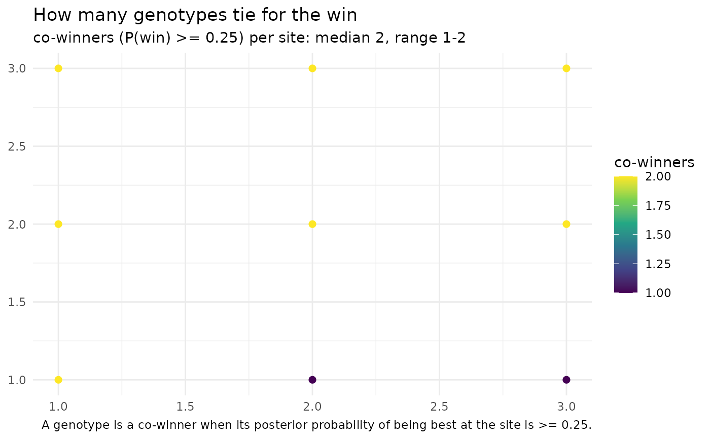

Map scanned predictions, or training-network coverage
Usage
map_scan(
scan,
coords,
lon_col = "lon",
lat_col = "lat",
date_col = NULL,
type = c("performance", "coverage", "which_won_where"),
genotypes = NULL,
summarise = c("none", "mean"),
facet_by = c("genotype", "date"),
shp = NULL,
clip = FALSE,
mark_envelope = TRUE,
envelope_level = c("gross", "mild"),
win_threshold = 0.25,
point_size = 2,
palette = "viridis",
output = c("plot", "table")
)Arguments
- scan
a `scan_untested_envs` / [grid_scan()] result.
- coords, lon_col, lat_col, date_col
as in [scan_spatial_table()].
- type
`"performance"` (predicted value), `"coverage"` (where the training network supports prediction), or `"which_won_where"` (the top genotype per site, and how many genotypes tie it).
- genotypes
genotypes to map. Required for `type = "performance"` unless `summarise = "mean"`. For `type = "which_won_where"` it restricts the pool of genotypes that compete for the win (default: all).
- summarise
for `type = "performance"`: `"none"` (panel per genotype) or `"mean"` (single panel, mean over selected genotypes).
- facet_by
`"genotype"` (A) or `"date"` (C). `"date"` needs `date_col`.
- shp
optional `sf` polygon layer (e.g. a state or country border from `geobr::read_state()`) drawn underneath the points; also used to clip when `clip = TRUE`.
- clip
if `TRUE` and `shp` is supplied, keep only the scanned sites that fall inside `shp` (points are matched to `shp` in its CRS).
- mark_envelope
hatch/grey cells outside the envelope.
- envelope_level
`"gross"` (default) or `"mild"`.
- win_threshold
for `type = "which_won_where"`: the minimum posterior probability of being the best genotype for another genotype to count as a co-winner at a site (default `0.25`).
- point_size, palette
cosmetic.
- output
`"plot"` (default) returns a ggplot; `"table"` returns the data.frame that would have been plotted (one row per site, or per site-by-genotype for `type = "performance"`), so you can build your own map. Clipping and `summarise` are applied first, and a logical `flagged` column marks sites outside the envelope. `"table"` needs no ggplot2.
Value
a ggplot object, or a data.frame when `output = "table"`. For `type = "which_won_where"` a two-element list is returned instead: `who_won_where` (the single top genotype per site, by posterior mean) and `winners` (how many genotypes have posterior `prob_win >= win_threshold`), each a ggplot, or a data.frame when `output = "table"`.
Details
Three kinds of map are available through `type`:
`"performance"`: the predicted value (`yHat`) of one or more genotypes across the scanned sites, one panel per genotype (or a single panel of the mean with `summarise = "mean"`). Sites outside the training covariate envelope are drawn as grey crosses rather than on the value scale.
`"coverage"`: where the training network actually supports prediction, colouring each site by its geometric position relative to the training covariate cloud (interpolation, edge, mild- or gross-extrapolation).
`"which_won_where"`: a classic which-won-where view for selection. It answers two questions with two maps (and two tables). Who won where is the single top genotype per site, by posterior mean (`yHat`; ties broken by the first genotype). Winners is how many genotypes are statistically tied for the win, taken from the scan's posterior draws: a genotype is a co-winner when its probability of being the best at that site (`prob_win`) is at least `win_threshold`. The count (`n_winners`) and the tied genotypes (`winners`, most probable first) are reported per site, so you can see where the decision is clear (one winner) versus where several genotypes are indistinguishable. This needs a scan from the current [scan_untested_envs()], which stores the per-site win probabilities.
Examples
## A scan is normally produced by scan_untested_envs(); here we build a
## minimal one by hand -- 2 genotypes predicted at 9 sites on a 3x3 grid.
sites <- paste0("S", 1:9)
grid <- expand.grid(lon = 1:3, lat = 1:3)
yh <- rbind(G1 = 6 + grid$lon * 0.3 - grid$lat * 0.1,
G2 = 5 + grid$lat * 0.4)
colnames(yh) <- sites
scan <- list(
yHat_matrix = yh, yHat_lower = yh - 0.4, yHat_upper = yh + 0.4,
## posterior P(best) per genotype x site (illustrative softmax of yHat)
yHat_prob_win = prop.table(exp(yh), margin = 2),
interpolation = data.frame(
env = sites,
position = rep(c("interpolation", "edge",
"gross_extrapolation"), each = 3),
mahalanobis_ratio = seq(0.5, 3.5, length.out = 9),
prop_outside = seq(0, 0.8, length.out = 9),
weight_negativity = 0, stringsAsFactors = FALSE))
class(scan) <- "scan_untested_envs"
## Site coordinates, keyed by the scanned environment name
coords <- data.frame(env = sites, lon = grid$lon, lat = grid$lat)
# \donttest{
if (requireNamespace("ggplot2", quietly = TRUE)) {
## Where does the training network support prediction?
map_scan(scan, coords, type = "coverage")
## Predicted performance for a single genotype
map_scan(scan, coords, type = "performance", genotypes = "G1")
## Mean over several genotypes in one panel
map_scan(scan, coords, type = "performance",
genotypes = c("G1", "G2"), summarise = "mean")
## Which genotype wins at each site, and how many genotypes tie it
ww <- map_scan(scan, coords, type = "which_won_where")
ww$who_won_where
ww$winners
}

# }
## Export the plotted data instead of a figure, to map it your own way
head(map_scan(scan, coords, type = "coverage", output = "table"))
#> gid env lon lat yHat lower upper position mahalanobis_ratio prop_outside
#> 1 G1 S1 1 1 6.2 5.8 6.6 interpolation 0.500 0.0
#> 2 G1 S2 2 1 6.5 6.1 6.9 interpolation 0.875 0.1
#> 3 G1 S3 3 1 6.8 6.4 7.2 interpolation 1.250 0.2
#> 4 G1 S4 1 2 6.1 5.7 6.5 edge 1.625 0.3
#> 5 G1 S5 2 2 6.4 6.0 6.8 edge 2.000 0.4
#> 6 G1 S6 3 2 6.7 6.3 7.1 edge 2.375 0.5
#> weight_negativity ci_width prob_win flagged
#> 1 0 0.8 0.6899745 FALSE
#> 2 0 0.8 0.7502601 FALSE
#> 3 0 0.8 0.8021839 FALSE
#> 4 0 0.8 0.5744425 FALSE
#> 5 0 0.8 0.6456563 FALSE
#> 6 0 0.8 0.7109495 FALSE
## Both winner tables (no ggplot2 needed), one row per site
ww_tab <- map_scan(scan, coords, type = "which_won_where", output = "table")
head(ww_tab$who_won_where)
#> env lon lat winner winner_yHat winner_prob position flagged
#> 1 S1 1 1 G1 6.2 0.6899745 interpolation FALSE
#> 2 S2 2 1 G1 6.5 0.7502601 interpolation FALSE
#> 3 S3 3 1 G1 6.8 0.8021839 interpolation FALSE
#> 4 S4 1 2 G1 6.1 0.5744425 edge FALSE
#> 5 S5 2 2 G1 6.4 0.6456563 edge FALSE
#> 6 S6 3 2 G1 6.7 0.7109495 edge FALSE
head(ww_tab$winners)
#> env lon lat n_winners winners max_prob position flagged
#> 1 S1 1 1 2 G1, G2 0.6899745 interpolation FALSE
#> 2 S2 2 1 1 G1 0.7502601 interpolation FALSE
#> 3 S3 3 1 1 G1 0.8021839 interpolation FALSE
#> 4 S4 1 2 2 G1, G2 0.5744425 edge FALSE
#> 5 S5 2 2 2 G1, G2 0.6456563 edge FALSE
#> 6 S6 3 2 2 G1, G2 0.7109495 edge FALSE
if (FALSE) { # \dontrun{
## ---- Realistic scan: 50 new locations across Mato Grosso, Brazil --------
## The bundled maize datasets are multi-environment trials from Mato Grosso:
## maizeWTH (daily weather), maizeYield (grain yield) and maizeG (genomic
## relationships). We train on them, then predict the trained genotypes at
## 50 candidate sites spread across the state. Needs BGGE (fitting) and a
## network connection (get_weather() queries NASA POWER).
data("maizeWTH"); data("maizeYield"); data("maizeG")
## 1. Training environmental covariates (first 100 days after sowing)
vars <- c("FRUE", "PETP", "GDD", "T2M_MAX")
Wtr <- W_matrix(env.data = maizeWTH[maizeWTH$daysFromStart < 100, ],
var.id = vars, statistic = "mean")
## 2. Kernels + a fit that KEEPS the effect chains (required by any scan)
K <- get_kernel(K_G = list(G = maizeG),
K_E = list(W = env_kernel(env.data = Wtr)[[2]]),
data = maizeYield, model = "RNMM",
env = "env", gid = "gid", y = "value")
fit <- kernel_model(y = "value", data = maizeYield, random = K,
env = "env", gid = "gid",
iterations = 5000, burnin = 1000, keep_effects = TRUE)
## 3. Fifty candidate locations across Mato Grosso (WGS84 decimal degrees).
## The state spans roughly 7.3-18.0 S and 50.2-61.6 W.
set.seed(2024)
coords <- data.frame(
env = sprintf("MT%02d", 1:50),
lon = runif(50, -61.6, -50.2),
lat = runif(50, -18.0, -7.3))
## 4. Daily weather for each site over one summer season, processed into the
## SAME covariates as the training matrix.
wth_new <- get_weather(env.id = coords$env, lat = coords$lat, lon = coords$lon,
start.day = "2023-11-01", end.day = "2024-02-15",
variables.names = c("T2M", "T2M_MAX", "T2M_MIN",
"T2MDEW", "PRECTOT", "RH2M",
"ALLSKY_SFC_SW_DWN"))
wth_new <- processWTH(wth_new) # derives FRUE, PETP, GDD, ...
Wnew <- W_matrix(env.data = wth_new[wth_new$daysFromStart < 100, ],
var.id = vars, statistic = "mean")
## 5. Predict the trained genotypes at all 50 sites
sc <- scan_untested_envs(fit, W_train = Wtr, W_new = Wnew, K_G = maizeG)
## 6. Coverage first: where does the trial network actually support prediction?
map_scan(sc, coords, type = "coverage")
## Predicted performance of one genotype across Mato Grosso
g1 <- rownames(maizeG)[1]
map_scan(sc, coords, type = "performance", genotypes = g1)
## Mean predicted performance over the first ten genotypes
map_scan(sc, coords, type = "performance",
genotypes = rownames(maizeG)[1:10], summarise = "mean")
## 7. Overlay the Mato Grosso state border for context. geobr serves the
## official IBGE boundaries for Brazil as sf objects; clip = TRUE also
## drops any scanned site that falls outside the polygon.
mt <- geobr::read_state(code_state = "MT", year = 2020)
map_scan(sc, coords, type = "coverage", shp = mt)
map_scan(sc, coords, type = "performance", genotypes = g1,
shp = mt, clip = TRUE)
} # }